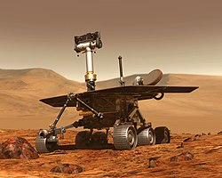

Les fusées

Les fusées sont les véhicules qui permettent de quitter la Terre.
Grâce à leurs moteurs extrêmement puissants, elles transportent satellites, sondes et astronautes dans l'espace.
Les astronautes

Les astronautes sont des explorateurs de l'espace.
Ils voyagent dans des stations spatiales ou participent à des missions scientifiques autour de la Terre ou vers la Lune.
Les satellites

Les satellites tournent autour de la Terre et servent à communiquer? observer la météo, étudier les climat ou permettre le GPS.
DécouvrirLes missions spatiales

Depuis plus de 60 ans, les agences spatiales envoient des missions pour explorer la Lune, Mars et d'autres planètes.
Découvrir